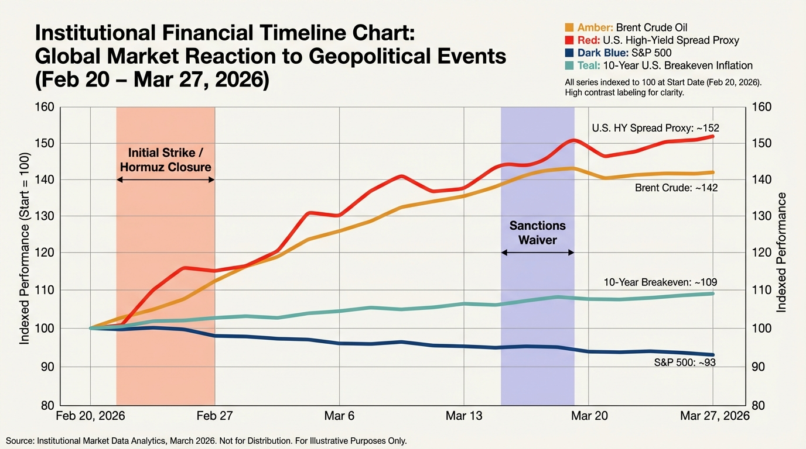
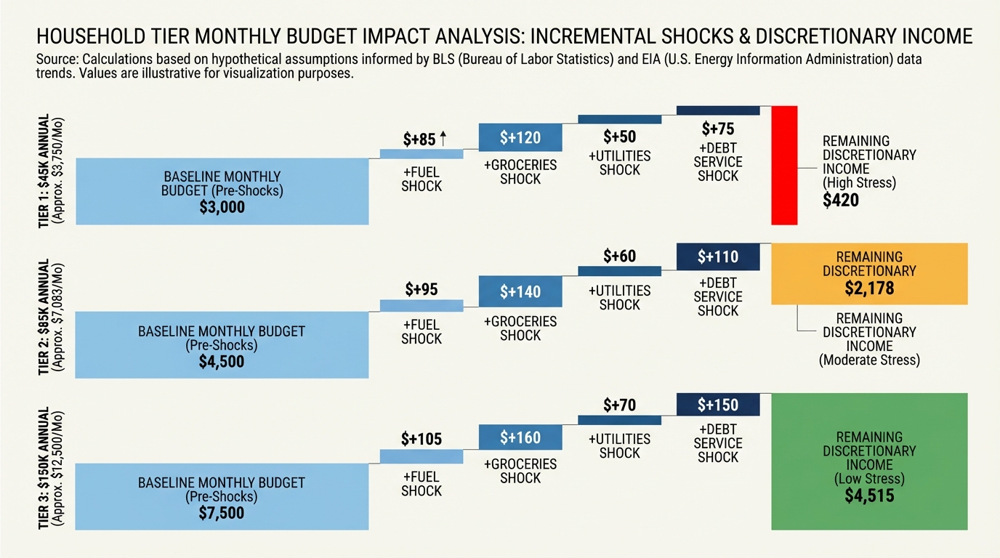
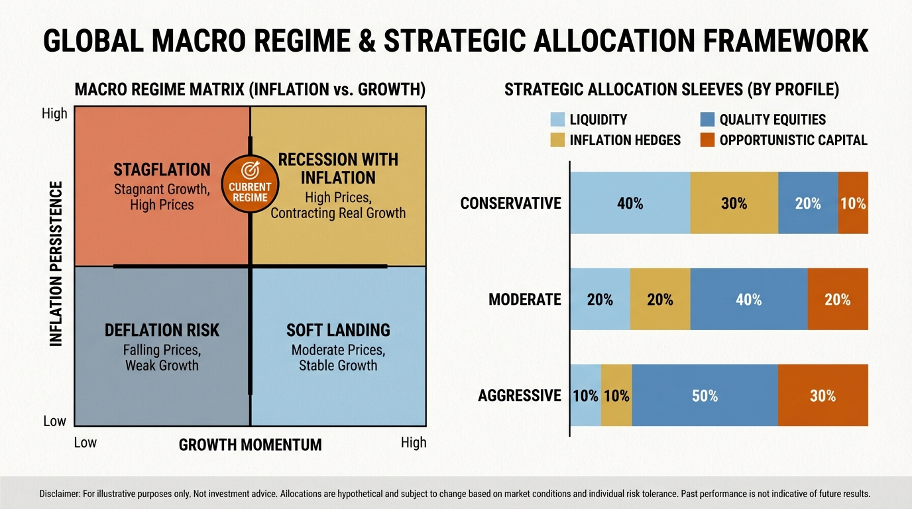

The War Premium: How the Iran Conflict Is Repricing Energy, Credit, and Equities
In the first days of the 2026 campaign, missile strikes and naval alerts turned the Strait of Hormuz from a shipping route into a contested bottleneck, and global markets immediately began pricing a new war regime.
The early sequence was fast and mechanical. Initial strikes hit command and energy-linked infrastructure, insurers repriced Gulf transit risk within hours, tanker operators rerouted or paused, and traders moved from probability pricing to disruption pricing. Within days, Brent moved above $105, shipping insurance and charter costs surged, and risk assets reset. The closure dynamics around Hormuz transformed what began as military escalation into an economic shock with global reach.
The right frame is not a headline chronology. It is a transmission system: conflict risk reprices energy and logistics, energy reprices inflation expectations, inflation reprices policy paths, and policy uncertainty reprices credit and equities. Households then absorb the final pass-through through fuel, food, utilities, and debt-service pressure.
Core thesis: the war premium behaves like a system-wide tax on risk appetite. It raises the cost of energy, the cost of capital, and the cost of planning error at the same time.
The Actual Numbers First
- Oil: Brent above $105 and WTI above $100 during March; analyst forecasts were revised materially upward from pre-conflict baselines (source).
- Hormuz disruption: supply risk concentrated around a chokepoint handling roughly one-fifth of global oil flow (source).
- Shipping insurance: war-risk pricing and tanker rates moved to crisis levels in a short window (source).
- Credit: investment-grade and high-yield spreads widened materially into March (source).
- Equities: broad index drawdown from January highs with large sector divergence, especially discretionary versus energy/defense (source).
- Inflation: headline CPI remained above target before full March pass-through from energy shock was visible (source).

How the Transmission Chain Works
The first move occurs in oil and shipping. Even before full physical disruption, front-month contracts and insurance premia reprice expected risk. That increase then transmits into refined products, transport, and industrial inputs. The result is cost pressure in essentials before official policy language catches up.
The second move is inflation expectations. Once energy reprices, the market sees higher probability that disinflation slows or reverses in selected baskets. The third move is policy-path uncertainty. Central banks then face a narrow corridor: easing risks inflation persistence; prolonged restriction risks growth damage. Markets price that corridor as wider risk premia.
The fourth move is credit and equities. Spread widening tightens refinancing windows, and equity markets discount weaker earnings durability with higher required returns. Household finances receive the final pass-through through fuel, groceries, utilities, insurance, and debt-service stress.

The Fed's Narrowing Corridor
Supply-driven inflation and slowing growth produce policy asymmetry. The bar for rapid easing rises when energy shock threatens inflation re-acceleration, while growth fragility argues against prolonged restriction. This is why rate-path communication appears uneven and why cross-asset volatility remains elevated.
For portfolio construction, the point is operational. Do not anchor to a single policy outcome. Build allocations that survive extended uncertainty in rates, inflation, and growth simultaneously.
Credit Is the Stress Signal That Headlines Underweight
Credit spread widening often leads macro deterioration in real time. When high-yield spreads move rapidly while refinancing supply is heavy, lower-quality borrowers face a three-layer squeeze: weaker demand, higher costs, and tighter funding terms. Public defaults usually show up later.
This matters for equity investors because spread stress is also an earnings durability signal. It is also a household signal for variable-rate debt holders and families with thin liquidity buffers.
How Equities Are Being Re-Rated
The present drawdown is a two-variable compression. Multiples contract as discount rates and uncertainty premia rise. Earnings expectations soften as cost pressure and demand uncertainty increase. Sector spread tells the same story: energy and defense relative strength, discretionary and transport pressure, broad index drag.
Traditional hedges have not behaved uniformly. In this environment, the quality of hedge design matters more than category labels. Liquidity quality and drawdown governance outperform ad hoc tactical reactions.
Why Households Feel Worse Than Headline Data Suggests
Households consume an essentials-weighted basket, not the macro average. Energy-linked cost increases have non-linear effects on lower-flexibility budgets. Even when monthly inflation changes moderate later, price-level reset remains. That is why sentiment can continue deteriorating after headline numbers appear to stabilize.

Portfolio Framework for This Regime
The robust strategy is regime-aware, not event-predictive. Size risk from solvency constraints first, then from conviction. A practical structure uses four sleeves: liquidity reserves, inflation-sensitive hedges, quality cash-flow equities, and opportunistic risk capital with predefined re-entry bands.
- Liquidity reserves: target six to twelve months of essential burn plus debt service.
- Inflation-sensitive hedges: selective commodity/energy and short-duration inflation protection.
- Quality equities: pricing power, lower leverage, essential demand.
- Opportunistic capital: staged deployment into dislocations after policy triggers are defined.
90-Day Execution Framework
Days 1-15: Map exposures. Separate portfolio risk from solvency risk. Write burn rate, debt service, liquidity runway, and concentration by sector.
Days 16-30: Stress-test three scenarios: de-escalation, persistent standoff, escalation. Quantify impact on inflation assumptions, spread environment, equity drawdown depth, and household monthly cash flow.
Days 31-60: Rebalance by predefined rules. Raise liquidity, reduce unintended concentration, set staged re-entry bands.
Days 61-90: Harden operations. Renegotiate recurring costs, formalize contingency cash policy, and document trigger-based portfolio actions.

What Is Known, Inferred, and Uncertain
| Category | Assessment |
|---|---|
| Known | Energy shock, spread widening, equity drawdown, and elevated household essentials pressure are observable. |
| Inferred | Prolonged energy stress can delay easing and tighten credit conditions further for weaker balance sheets. |
| Uncertain | Conflict duration, escalation path, sanctions trajectory, and timing of policy response. |
Practical Bottom Line
The war premium is not a single trade. It is a system-level repricing of energy, capital, and planning certainty. In this regime, liquidity discipline, scenario-aware sizing, and rule-based execution are more durable than reactive headline positioning.
Source List
Conflict and market event reporting: Reuters, Bloomberg, Al Jazeera, NPR, sector market summaries.
Macro and market data stack: EIA, FRED, BLS, ICE spread proxies, and index provider feeds.
Institutional framing: published commentary and scenario notes from major asset managers and banks.
Stress-test the lifespan side of this balance-sheet story.
Open the matching LifeMeter scenario with a prefilled planning profile so the wealth case and the health-runway case can be read together.